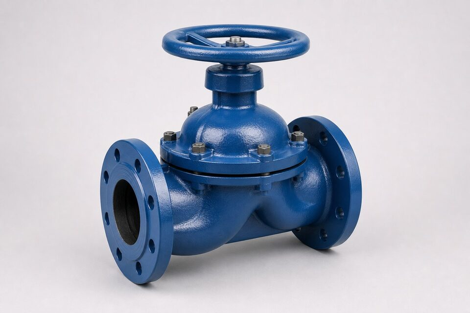

ساختار و اصل کار
در شیر دیافراگم، یک غشای انعطافپذیر بین بدنه و بونت قرار دارد. با پایین آمدن ساقه، دیافراگم روی سد میانی بدنه فشرده شده و جریان قطع میشود؛ با بالا رفتن، مسیر باز میگردد. نکته کلیدی این است که ساقه، بونت و عملگر هیچگاه با سیال تماس ندارند و تنها دیافراگم و بدنه در معرض سیال قرار میگیرند. این جداسازی ذاتی، نشتی ساقه را حذف میکند و اجازه میدهد بدنه از مواد مقاوم به خوردگی یا با پوشش داخلی ساخته شود بدون اینکه مکانیزم درگیر شود.

دو طرح اصلی: ویِر و مستقیم
- طرح ویِر (سد میانی): بدنه یک برآمدگی مرکزی دارد که دیافراگم روی آن مینشیند؛ مسیر جریان باریکتر اما آببندی بهتر و مناسب کنترل.
- طرح مستقیم (سرتاسری): مسیر جریان بازتر، افت فشار کمتر و مناسب دوغاب و سیالهای حاوی ذرات، با دیافراگم بلندتر.
- عملگر: دستی با بونت پیچی، پنوماتیک برای سیکلهای مکرر یا کنترل از راه دور.
مزایای ذاتی
مهمترین مزیت، حذف نشتی ساقه و محافظت مکانیزم در برابر سیال است؛ در سرویسهای خورنده، اسیدها و دوغاب، این ویژگی عمر تجهیز را چند برابر میکند. نبود حفره ماندگار در طرح ویِر، تمیزکاری و استریل را ممکن میسازد و به همین دلیل این شیر در صنایع دارویی، غذایی و بیوتکنولوژی استاندارد است. قابلیت عبور ذرات در طرح مستقیم، گرفتگی را کاهش میدهد و تعمیر با تعویض دیافراگم بدون خارج کردن بدنه از خط انجام میشود؛ بدنهها نیز با پوششهای داخلی مختلف برای سیالهای متفاوت عرضه میشوند.
محدودیتها
دیافراگم الاستومری نقطه محدودکننده است: تحمل دما معمولاً تا حدود صد و هشتاد درجه و فشار کاری تا ردههای متوسط است. در دمای بالاتر یا فشار زیاد، دیافراگم زودتر خسته میشود و باید به شیرهای دیگر رفت. سیکلهای مکرر با دیفرانسیل فشار بالا، عمر دیافراگم را کوتاه میکنند و در سایزهای بسیار بزرگ، نیروی لازم برای نشاندن دیافراگم زیاد میشود. بنابراین این شیر انتخاب اول برای سرویسهای خورنده و بهداشتی در محدوده دما و فشار مجاز است، نه جایگزین عمومی همه شیرها.
متریال دیافراگم
| متریال | تحمل نسبی دما | کاربرد رایج |
|---|---|---|
| لازیک طبیعی | پایین | آب، دوغاب و سیالهای خنک |
| نیتریل | متوسط | روغنها و هیدروکربنهای سبک |
| بوتیل | متوسط | اسیدها و بازها |
| فلاوروکربن | متوسط تا بالا | حلالها و سیالهای خورنده خاص |
| پیتیئیافئی با پشتیبان | بالاترین مقاومت شیمیایی | خورندهترین سرویسها |
انتخاب نهایی باید با سازنده و بر اساس سیال واقعی تایید شود.
نگهداری و نکات خرید
دیافراگم قطعه مصرفی است و برنامه تعویض پیشگیرانه باید از روز اول تعریف شود؛ در سرویسهای حساس، داشتن دیافراگم یدک در انبار، توقف خط را به حداقل میرساند. در استعلام، سیال واقعی با غلظت و دما، وضعیت سیکل کاری و نوع عملگر را ذکر کنید تا سازنده متریال دیافراگم و طرح بدنه را پیشنهاد دهد. در صنایع بهداشتی، مدارک تایید مواد دیافراگم و قابلیت تمیزکاری درجا باید بخشی از مدارک تحویل باشد.
جمعبندی
شیر دیافراگم به دلیل جداسازی مکانیزم از سیال، انتخاب طبیعی سرویسهای خورنده، دوغاب و بهداشتی است. با شناخت دو طرح ویِر و مستقیم، انتخاب دیافراگم متناسب سیال و رعایت محدوده دما و فشار، این شیر نگهداری اندکی دارد و تعویض دیافراگم آن سریع و کمهزینه است.
سوالات رایج
مزیت اصلی شیر دیافراگم چیست؟
جداسازی کامل مکانیزم حرکت از سیال؛ ساقه و عملگر هرگز با سیال تماس ندارند، بنابراین خوردگی و نشتی ساقه عملاً حذف میشود.
چرا در صنایع دارویی و غذایی رایج است؟
طرح ویِر بدون گوشه و حفره ماندگار ساخته میشود، تمیزکاری آن آسان است و دیافراگم با مواد تاییدشده بهداشتی قابل عرضه است.
محدودیت اصلی این شیر چیست؟
دیافراگم الاستومری محدودیت دما و فشار دارد؛ معمولاً تا حدود صد و هشتاد درجه و فشارهای متوسط. برای فراتر از آن باید به طرحهای دیگر رفت.
دیافراگم چه زمانی تعویض میشود؟
با کاهش عملکرد آببندی، تغییر شکل یا در سرویسهای برنامهریزیشده پیشگیرانه. دیافراگم قطعه مصرفی است و هزینه آن نسبت به توقف خط ناچیز است.
مطالب مرتبط
- متریال نشیمنگاه شیرآلات
- متریال بدنه شیرآلات
- راهنمای جامع شیر یکطرفه
- راهنمای تست و معیارهای نشتی شیرآلات
با ذکر سیال، دما، فشار و سایز، شیر دیافراگم با بدنه و دیافراگم متناسب سیال به همراه مدارک عرضه میشود.
مشاهده صفحه محصول ← ثبت RFQ همین محصولتامین این تجهیزات را به پیشرو تجهیز فرتاک بسپارید
شرکت پیشرو تجهیز فرتاک تامینکننده تخصصی تجهیزات صنعتی برای پروژههای نفت، گاز، پتروشیمی، فولاد و نیروگاهی است. برای دریافت پیشنهاد فنی و قیمت، استعلام (RFQ) خود را ثبت کنید تا کارشناسان مهندسی فروش در کوتاهترین زمان پاسخ دهند.
- تامین شیرآلات صنعتیخانواده کامل شیر با گواهی مواد و تست
- تامین تجهیزات صنایع نفت و گازپکیج مواد مطابق وندورلیست